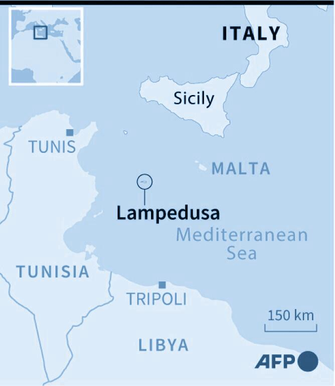

For sale: baby shoes, never worn.
One of the shortest but most effective stories of loss. It captures what the residents of Lampedusa, a small Italian island closer to Africa than it is to Europe, have witnessed for years.
A small group of residents came together and formed the Askavusa (which means "barefoot" in Sicilian) Collective. Together since 2009, they have been memorializing the journeys of thousands of migrants by collecting the things they left behind. These migrants who hope to start a new life, abandon the few things from their past they had brought into their future.
These items are stored in an independent cultural center aptly called PortoM, where M stands for memory, migration, Mediterannean, among others. “A lot has been destroyed. We started recovering these objects,” says Giacomo Sferlazzo, a local artist and activist.

The collective acts in many ways like bowerbirds. Bowerbirds are famous for collecting the things left behind, but only BLUE things.

Why BLUE?

People ask me this question often. I never know how to respond. We don’t get to choose what or whom we love, I want to say.
We just don’t get to choose.
This is a line from Maggie Nelson's Bluets, a book dedicated to the color blue.
But instead of luring females, the collective is luring memory. “Memory is not neutral. It is a political act: you decide what to remember and what to forget.”
By reminding visitors of this political context, Sferlazzo believes they can fight off easy sentimentalism, and turn art into something more useful.
“Nowadays there is a need to reflect, and that is why I think that art exhibitions should be places to reason, to reflect, to look at data,” he says.
For now, letters written in French, English, Tigrinya, Bengali, Arabic by loved ones, or by migrants on the road, are testimonies that are best not to show yet because displaying them right now would be "a pornography of pain".
Like this bottle which contains a note inside addresse to whomever finds it, photographer Marco Pavan shot some of the things left behind by migrants memorialized in the depository in his photojournalism called Migrant Objects.
Selected items from the project are shown below.